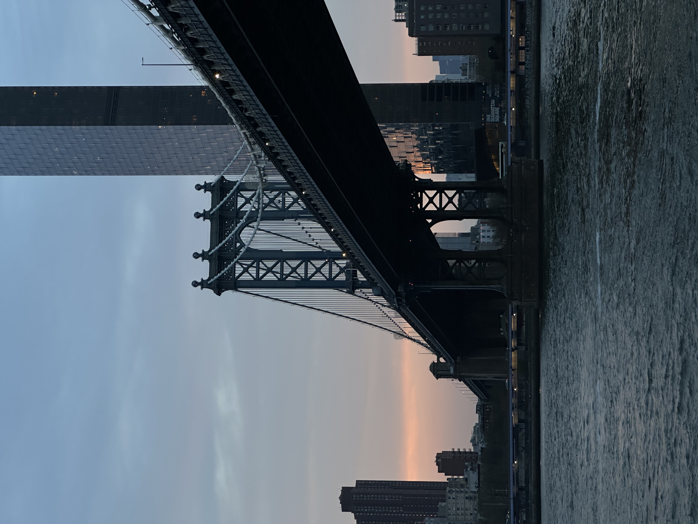
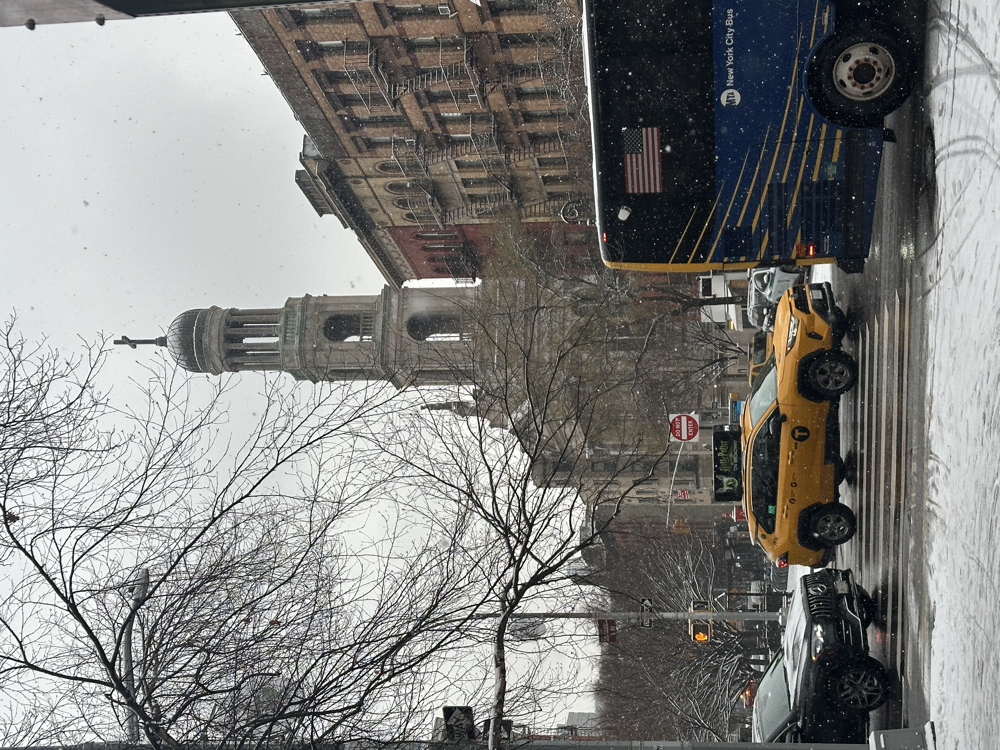
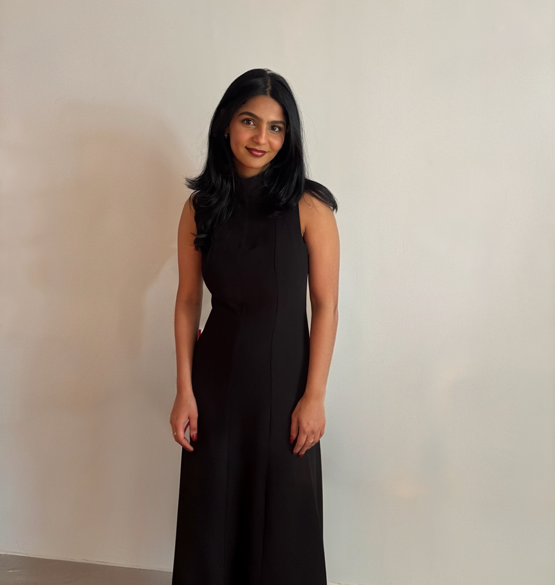

The parts of me that don't need to be optimized.
I'm a builder, a curious mind, and someone who finds beauty in both a well-designed data pipeline and a perfectly framed photograph. When I'm not deep in code, I'm probably exploring a new city, planning my next adventure, or capturing moments through a camera lens.

Who I am
I grew up in Hyderabad, moved to New York for grad school, and somewhere along the way became obsessed with the idea that technology should feel human. I care deeply about building things that actually matter, and I bring that same attention to everything I do, on screen and off it.
What drives me
I'm drawn to problems that seem impossible until suddenly they aren't. Whether it's a model that won't converge, a pipeline at scale, or a photo composition that just isn't landing. I love the process of figuring things out. That restlessness is what keeps me going, and honestly, what makes it all worthwhile.
Photography
Mostly on my iPhone, but the eye is always on. I love finding something worth capturing in the most ordinary moments.
Learning
I'm genuinely excited by new ideas. A paper, a YouTube rabbit hole, a podcast. I'll learn from anywhere.
Good Coffee
A non-negotiable. New York has been very kind on this front. There's always a new café to find and a good cup to sit with.
Design
Head of Design and Marketing at NYU GISA and NYU Tandon Google Developer Club. Canva is basically a second home.
Building things
Not just in code. Furniture too. I love the feeling of making something from nothing with your hands.


"The details are not the details. They make the design."
Charles Eames